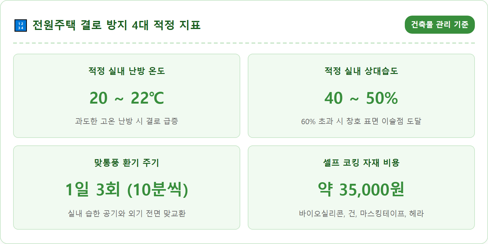
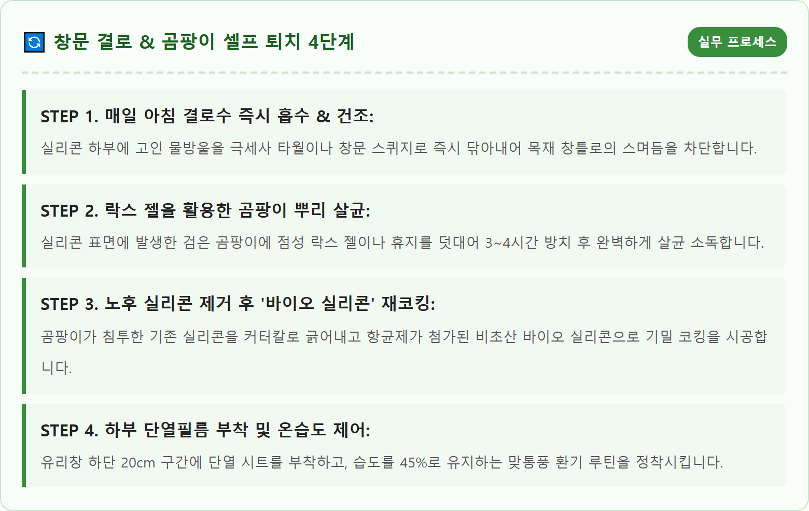
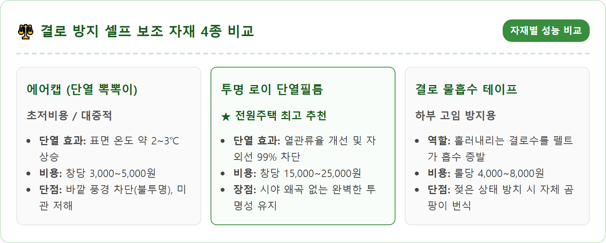
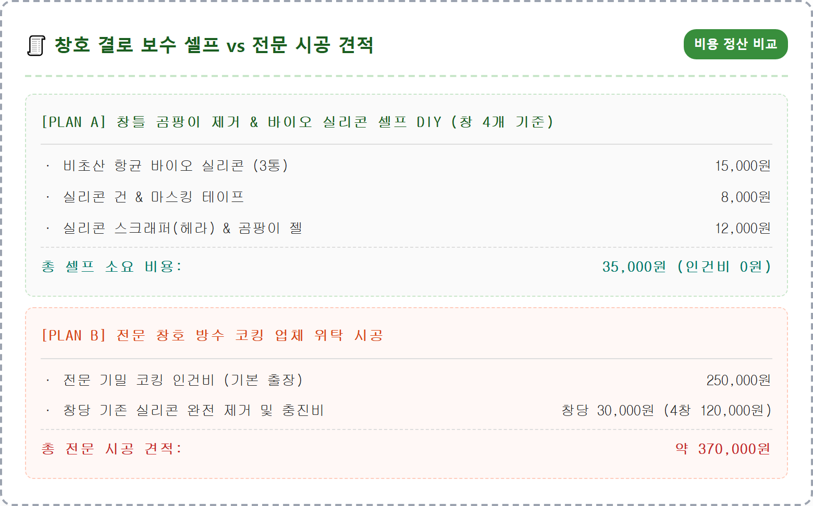
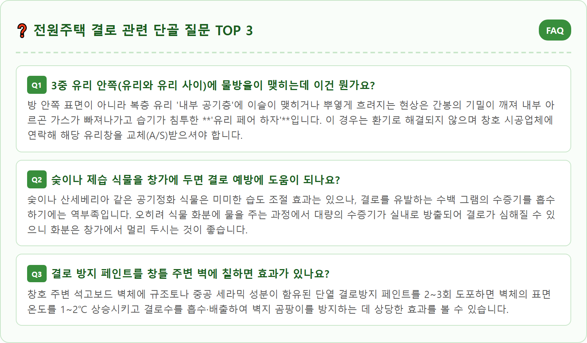

A detailed and authentic photograph of a cozy rural wooden country house interior in winter. A large modern triple-glazed system window looks out over a tranquil frost-covered garden. On the lower edge of the interior glass, tiny glistening condensation water droplets are carefully being wiped away with a clean microfiber cloth. A silicone caulking gun with professional anti-mold bio silicone and a digital temperature-humidity hygrometer showing 21°C and 45% humidity sit neatly on the wooden windowsill. Warm indoor morning sunlight, hyper-realistic, 8k resolution, authentic Korean residential DIY home improvement atmosphere.

가을이 저물고 아침저녁으로 서리가 내리는 11월에 접어들면, 전원주택 거실과 침실의 대형 창호 하부에 물방울이 송글송글 맺히는 '창문 결로(Condensation)' 현상이 본격적으로 시작됩니다. 도심 아파트에 거주할 때는 겪어보지 못했던 주택 입주자들은 고급 시스템창호를 설치했음에도 불구하고 아침마다 흥건하게 흘러내리는 물을 보며 시공 하자가 아닌지 불안에 떨곤 합니다.
하지만 결로는 창호의 파손이나 누수가 아니라 지극히 자연스러운 '물리적 열역학 현상'입니다. 공기는 온도에 따라 머금을 수 있는 수증기의 양(포화수증기량)이 정해져 있습니다. 따뜻한 실내 공기가 차가운 창호 표면에 닿아 급격히 냉각되면, 공기가 품고 있던 수증기가 더 이상 기체 상태를 유지하지 못하고 물방울로 응결되는데 이 임계 온도를 바로 **'이슬점(노점 온도)'**이라고 부릅니다.
전원주택은 아파트와 달리 상하좌우가 이웃 세대로 둘러싸여 있지 않고 지붕과 4면 외벽이 모두 차가운 외기에 100% 노출되어 있습니다. 따라서 실내외 온도차가 15~20℃ 이상 쉽게 벌어지며, 정원 식물이나 목조 자재, 전원생활 특유의 잦은 국물 요리와 가습으로 인해 실내 습도가 높아져 결로 발생 위험에 훨씬 취약할 수밖에 없습니다.

"수천만 원을 들여 독일식 로이 3중 유리 시스템창호를 시공했는데 왜 결로가 생기나요?" 전원주택 건축주들이 가장 많이 토로하는 억울함입니다. 결론부터 말씀드리면, **세상에 결로가 100% 생기지 않는 창호는 존재하지 않습니다.** 시스템창호의 단열 성능이 뛰어난 것은 사실이지만, 실내 습도가 과도하게 높다면 아무리 최고급 창호라 하더라도 표면에 이슬이 맺힐 수밖에 없습니다.
특히 시스템창호의 결로를 자세히 관찰해 보면, 유리 중앙부가 아니라 **'유리창 가장자리 하부 5~10cm 테두리'**를 따라 집중적으로 물방울이 맺히는 것을 볼 수 있습니다. 이는 유리와 유리 사이를 지지하는 금속성 '간봉(스페이서)' 때문입니다. 과거 일반 알루미늄 간봉이 적용된 복층 유리는 금속의 높은 열전도율 때문에 테두리 부위에서 열교(Heat Bridge) 현상이 발생하여 국소적인 결로 취약 지점이 됩니다.
최신 주택에는 열전도율이 극히 낮은 플라스틱 계열 소재의 **'단열 간봉(웜엣지, Warm-Edge)'**이 적용된 유리가 사용되지만, 이 역시 실내 습도가 60%를 초과하면 버텨내지 못합니다. 창호 탓을 하기 전에 우리 집 실내 습도계를 먼저 확인하고 생활 습기를 제어하는 것이 결로 해결의 출발점입니다.

많은 전원주택 거주자들이 겨울철 난방비를 아끼겠다는 일념으로 창문을 꽁꽁 닫아걸고 생활합니다. 하지만 이는 주택 내부를 거대한 '한증막'으로 만드는 지름길입니다. 사람이 숨을 쉬며 내뿜는 호흡, 샤워 후 욕실에서 나오는 수증기, 주방에서 국이나 찌개를 끓일 때 발생하는 수증기는 빠져나가지 못하고 실내에 누적되어 습도를 70% 이상으로 끌어올립니다.
결로를 없애는 가장 확실하고 돈이 들지 않는 특효약은 **'하루 3회, 10분 맞통풍 환기'**입니다. 단순히 창문 하나만 틈새로 열어두는 것은 찬 바람만 들어오고 공기 교환이 되지 않아 벽체만 차갑게 식혀 오히려 결로를 부추깁니다. 거실 창과 반대편 주방 창이나 현관문 등 대각선에 위치한 창문을 활짝 열어 실내의 묵은 습한 공기를 바깥의 건조하고 차가운 공기와 단 10분 만에 통째로 맞바꾸어야 합니다.
외기가 차갑더라도 건물 벽체나 가구가 머금고 있는 열용량이 있기 때문에 10분간 맞통풍 후 창문을 닫으면 실내 온도는 2~3분 만에 원래대로 복구되며 난방비 손실은 미미합니다. 신축 주택에 의무 설치된 **'전열교환기(환기장치)'**가 있다면 24시간 '약풍' 모드로 상시 가동하고, 3~6개월 주기로 프리필터와 헤파필터의 먼지를 청소해 주어야 환기 효율을 극대화할 수 있습니다.
전원주택의 건강과 창호 수명을 지켜주는 황금 온습도 공식은 **'실내 온도 20~22℃, 상대습도 40~50%'**입니다. 온도가 너무 높으면 실내외 온도차가 벌어져 결로가 극심해지고 난방비가 천문학적으로 치솟으며, 습도가 60%를 넘어서면 결로뿐 아니라 집먼지진드기와 곰팡이 포자가 폭발적으로 증식합니다.
거실과 각 방 침대 머리맡에 '디지털 온습도계'를 반드시 비치해 두고 수시로 수치를 모니터링해야 합니다. 만약 실내 습도가 55%를 넘어간다면 가습기 가동을 즉시 중단하고 제습기를 틀거나 주방 레인지 후드를 가동해 습기를 외부로 배출해야 합니다.
난방 방식에 있어서도 외출할 때 보일러를 완전히 꺼두었다가 귀가 후 25℃ 이상으로 급격하게 온도를 올리는 난방은 벽체와 창호의 표면 온도를 차갑게 식혀 결로를 유발하는 최악의 습관입니다. 겨울철에는 외출 시에도 외출 모드나 평소 설정 온도보다 2~3℃만 낮춘 18~19℃로 잔류 난방을 유지하는 것이 건축물 표면 온도를 지키고 결로를 막는 비결입니다.

창문 결로를 방치했을 때 가장 심각한 2차 피해는 창틀 하부 실리콘에 발생하는 시커먼 '흑곰팡이'입니다. 실리콘 내부로 파고든 곰팡이 균사는 공기 중으로 포자를 날려 아토피, 비염, 천식 등 호흡기 질환을 유발하며 전원주택의 쾌적함을 송두리째 파괴합니다.
곰팡이를 완전히 박멸하고 재발을 방지하는 셀프 코킹은 다음 순서로 진행합니다. 1단계로 커터칼이나 실리콘 스크래퍼를 이용해 곰팡이가 깊게 침투한 기존 실리콘을 완전히 파내어 제거합니다. 2단계로 드러난 창틀 틈새에 락스 희석액이나 알코올을 분무하여 잔여 균사를 완전히 소독하고, 헤어드라이어로 내부 습기를 100% 바짝 말려줍니다.
3단계는 실리콘 코킹 작업입니다. 반드시 일반 초산 실리콘이 아닌 곰팡이 억제 항균제가 함유된 **'비초산형 바이오 실리콘(Bio Silicone)'**을 사용해야 합니다. 유리면과 창틀 프레임에 마스킹 테이프를 일직선으로 붙인 뒤, 실리콘 건으로 균일한 두께로 쏴주고 실리콘 전용 고무 헤라로 부드럽게 밀어 표면을 마감합니다. 마스킹 테이프를 즉시 떼어내고 반나절 동안 건조하면 전문가 못지않은 깔끔하고 방수력 높은 항균 창틀이 완성됩니다.
유리면 자체의 표면 온도를 올려 결로 발생을 원천 차단하는 가장 손쉬운 물리적 차단책은 단열 시트를 시공하는 것입니다. 시중에서 흔히 구할 수 있는 제품으로는 일명 '뽁뽁이'라 불리는 단열 에어캡과 전문 '투명 로이 단열필름'이 있습니다.
에어캡은 가격이 매우 저렴하고 물만 뿌려도 유리에 쉽게 달라붙는 장점이 있습니다. 공기층이 유리 표면 온도를 2~3℃ 올려주어 결로 저감 효과가 확실합니다. 하지만 전원주택의 가장 큰 자산인 '아름다운 정원 풍경'과 채광을 완전히 가려버려 집안을 어둡고 답답하게 만드는 치명적인 단점이 있습니다.
따라서 전원주택 거실 창에는 투명도가 70% 이상 유지되면서 열선(적외선)을 반사하는 **'고투명 로이 단열필름'** 부착을 강력 추천합니다. 풍경을 시원하게 바라보면서도 유리면의 열전도를 차단하여 결로를 방지해 주며, 여름철에는 태양열을 차단해 냉방비를 절감해 주는 사계절 복합 단열재 역할을 수행합니다. 전체 시공이 부담스럽다면 결로가 집중되는 창호 하단부 20~30cm 구간에만 띠 형태로 부착하셔도 뛰어난 효과를 볼 수 있습니다.
환기와 단열 보강에도 불구하고 혹한기 영하 10℃ 이하로 기온이 떨어지면 소량의 결로가 발생할 수 있습니다. 이때 흘러내리는 결로수가 창틀 목재나 벽지로 스며들지 않도록 안전망을 구축해야 합니다.
유리창 맨 하단 실리콘 바로 윗부분에 **'결로수 흡수 테이프(부직포 펠트 테이프)'**를 부착해 두면, 위에서 흘러내리는 물방울이 테이프에 흡수되어 자연 증발되므로 실리콘 위로 물이 고이지 않습니다. 단, 흡수 테이프를 겨울 내내 방치하면 테이프 자체가 젖어 곰팡이가 피어오를 수 있으므로 2~3주 주기로 교체해 주어야 합니다.
또한 결로가 가장 심한 북향 방이나 드레스룸 창가 쪽에는 소형 미니 제습기나 제습제를 창문 바로 밑에 배치해 두는 것이 효과적입니다. 창문 주변의 공기 중 습기를 국소적으로 빨아들여 이슬점 도달을 막아주므로 결로 발생 자체를 사전에 억제할 수 있습니다.

경량 목구조나 중목구조로 지어진 목조 전원주택의 경우, 창문 결로를 방치했을 때 그 피해가 아파트 콘크리트벽과는 비교할 수 없을 정도로 치명적입니다. 창틀 하부로 스며든 수분이 목재 스터드(기둥)와 OSB 합판으로 침투하면 보이지 않는 벽체 내부에서 목재 부후균이 번식하여 주택의 구조적 뼈대를 썩게 만듭니다.
이때 가장 중요한 것은 물방울이 '결로'인지 아니면 외벽 방수 하자로 인한 '창틀 누수'인지를 명확하게 감별하는 것입니다. 비가 오지 않는 맑고 추운 날 아침에 유리 표면에서부터 물방울이 맺혀 아래로 흘러내린다면 100% 실내 결로입니다. 반면 비나 눈이 내리는 날 창틀 상부나 옆 모서리 틈새에서 물이 배어 나온다면 이는 외벽 이지씰(방수테이프)이나 외부 실리콘이 터져 빗물이 유입되는 외벽 누수입니다.
창틀 하부 목재가 이미 거뭇하게 변색되거나 썩어가는 징후가 보인다면 지체 없이 실리콘을 뜯어내고 목재 전용 방부 방청제를 도포한 뒤 완벽히 건조해야 주택의 수명을 지킬 수 있습니다.
창호 결로 문제를 해결하기 위해 시공을 고민할 때, 작업 범위에 따른 비용을 사전에 비교 검토해 두시면 합리적인 예산 집행이 가능합니다.
실리콘 곰팡이 제거와 재코킹, 하부 단열필름 부착 정도의 경미한 작업은 인터넷 쇼핑몰에서 자재를 구입하여 건축주 스스로 진행하는 '셀프 DIY'가 압도적으로 경제적입니다. 바이오 실리콘 3~4통(약 15,000원), 실리콘 건과 헤라(8,000원), 마스킹 테이프와 곰팡이 젤(12,000원) 등 **총 3만 5천 원 안팎**의 실비로 거실과 주요 방 4개의 창호를 모두 정비할 수 있습니다.
반면 외부 로프 작업이 필요한 창호 외부 실리콘 코킹이나, 벽체 단열 부실로 인한 석고보드 재시공 및 로이 이중창 추가 덧대기(덧창 시공)는 전문 업체의 시공이 필요합니다. 외부 발코니 전용 변성 실리콘 코킹은 세대당 30~50만 원 선, 창호 덧창 시공은 창호 크기에 따라 창당 80~150만 원의 견적이 발생합니다. 따라서 결로 초기에는 환기 루틴과 3만 원대 셀프 실리콘 코킹으로 먼저 대응해 보신 후, 차도를 지켜보며 전문 공사를 결정하시길 권장합니다.
| 구분 | 상세 정보 | 관리 가이드 |
|---|---|---|
| 결로 발생 기준 | 실내외 온도차 15℃ 이상, 실내 상대습도 60% 이상 | 창호 표면 온도가 이슬점 이하로 냉각 시 발생 |
| 황금 환경 기준 | 실내 온도 20~22℃ / 실내 습도 40~50% 유지 | 거실 온습도계 상시 비치 및 가습기 과다 사용 자제 |
| 필수 환기 루틴 | 하루 3회, 10분씩 대각선 맞통풍 환기 | 전열교환기(ERV) 24시간 약풍 가동 및 필터 관리 |
| 창틀 실리콘 보수 | 항균 비초산 바이오 실리콘 전용 사용 | 기존 곰팡이 완전 제거 및 건조 후 재코킹 필수 |